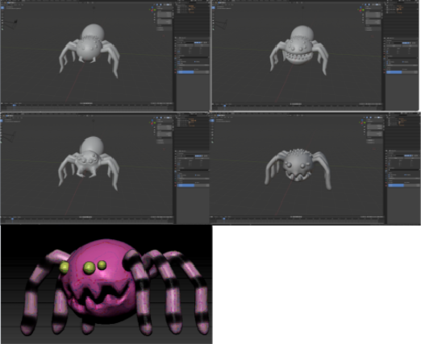

Enemies are one of the main obstacles for a player. Enemies will be developed to obstruct players, slow them down, create challenges and prevent them from completing the level with ease. They will come into contact with the player if they are close enough and deal with a fair bit of damages to present players with a challenge. Each type of enemy will have different attack mechanics and difficulty which allows players to explore a variety of experiences while playing the game. Some enemies may require them to be more cautious each time they are dealt with damages by any type of enemy. The few enemies that we have designed will have patrol mechanics which allows them to wander in certain areas in order to guard and wait for players to approach, then a detect system will cause the enemy to attack if a player is within a certain range. However, the pathing given to the enemies should not be too hard to read, or too difficult to pass through, as it will be difficult for beginner players to recognise them.
As a Player, I want to have some challange in game so he can overcome himself.
As a Player, I want enemies to have different mechanics based on their looks, so the game can be more challenging.
Ben is a high school student, as a teenager Ben is still going to school everyday. Homeworks and assignments are a lots and they are giving Ben a lots of stress so he looking for a game that can help him to relax. A game with simple attractive art, but not boring or too hard and bloody so that he can enjoy it while relaxing from the stress from school.
Jack is a hardcore player, he want the enemies going to be intersting having different behaviours. Enemies that he want is can have a unique indivitual attack or many mechanics.
The first enemy design is poisonous spiders and their attack includes spitting out venom that players will need to try their best to avoid. The consequences of being hit by their attack will cause a decline in the player’s health.
The second enemy design are gigantic ogres who patrol the castles. Their powers include physical attacks such as using clubs to try and hit the player character. Due to their mass power, the players could potentially feel the game ‘shaking’ as the ogres take their hit.
Enemies will follow the path that they are allocated to, and not be impeded by level assets or clip through parts of the level. Beginner players should be able to recognise the paths the enemies come from and be able to evade them in order to complete the level. If a player is to be damaged, the player character’s health will decrease.
The Saw Trap is a rarer obstacle the player character will come across on their journey, this trap will be clearly visible and intuitive to the player as it will look different from the normal floor tiles/ game background. The Blade/Saw will run on its programmed tracks continuously back and forth at interchangeable speeds making it easier to adjust the difficulty of the game. Since this trap will be constantly moving around, likely at high speeds, the “traps effective area” is significantly larger than the spike trap, therefore the consequence of coming in contact with the trap for the player, will be less severe as it is easier to make mistakes as the player. The player will lose a portion of their health, and become invulnerable for a second, giving them time to move past the trap and decreasing the chances of being damaged twice by the same trap.
The Design of this trap was mainly inspired by the well-known platforming game “Hollow Knight”, with a trap that can have its speed and a large effective area adjusted to the designers whims, allows the creator of the levels more control over the difficulty of the level design. Since this trap is very versatile, and matches the design of the spike trap, it perfectly conforms to the medieval fantasy castle theme we are going with.
As a Player of the game “Plunderer”, I need to run/jump past the moving saw trap without touching them in order to achieve the current objective and progress the story of the game.
Meaning that the successful implementation of the saw trap can be validated by having the player character touch the saw trap. If the trap is moving along its designed rout and reduces the players health upon contact, then the trap is working as intended.
The Spike trap is a common obstacle the player character will come across on their journey, this trap will be clearly visible to the player even when retracted as the design will be clearly different from normal floor tiles and should intuitively be something the player knows to avoid. The sharp nails of the trap will “spike” out and retract periodically or they could also permanently be out to provide a challenge to the player. Not only could this trap be on the floor it can also be on the walls and ceiling, making its application and potential diverse. Since the trap is either static or slowly periodically protruding/retracting, the consequence of the player touching the spikes would be instant death and reset to the checkpoint, regardless of the players health. This is because the “Traps effective area” is limited so the punishment should be more severe.
The design of this trap was inspired by lots of other games of a similar genre, the spike trap is a staple of the platforming genre and is required to increase the games difficulty. Without something to obstruct the player, the games difficulty would drastically reduce. As the setting of the game is inside a medieval castle, the appearance of iron spikes as traps, is a believable occurrence and helps to immerse the player in the world building of the game.
As a Player of the game “Plunderer”, I need to jump/get past the spike trap obstacles without touching them in order to achieve the current objective and progress the story of the game.
Meaning that the successful implementation of the spike trap can be validated by having the player character touch the spikes. If the player character is killed and sent back to the checkpoint upon contact, then it is working as intended.
• If the player is hit by the trap, their appearance is changed to a blackened aesthetic.
• Oil drips off the protagonist and leaves black blotches on the terrain
• The player’s speed is considerably slowed down temporarily


As a new gamer, I want a relaxed gaming experience. This means that the obstacles I encounter should be very forgiving and not punishing towards the player. For this reason, there should potentially be an “easy” difficulty, in which the potency of each traps should be severely mitigated.
As a casual gamer, I want a balanced sense of challenge. This means that I do not want something too difficult, but also not too easy. Therefore, the obstacles should provide somewhat of a challenge to casual gamers without being too hard that it is unaccessible to them.
As an experienced gamer, I want a hardcore challenge. This entails that I want a gruelling and difficult game to play. This can manifest through various difficulty settings, and how they can affect the properties of each of the traps or obstacles in their potency.
As a player, I want the oil trap to function as intended so I can have a fun experience.
As a player, I want the oil trap to have visually appealing sprites so it is aesthetically engaging.
As a player, I want the oil trap to provide a degree of challenge to my gameplay so it can feel satisfying when I can overcome the trap.
A player could trigger a pressure plate, releasing the oil from the above ceiling, drenching the character in oil. This could occur in the first level of the game.
The aforementioned user stories briefly acknowledge the core, defining characteristics of an effective trap.
Firstly, the oil trap must perform its functions without error. For example, there should be no bugs and it should coat the player in oil to slow down their movement.
Secondly, the oil sprites must be visually striking. This means that the sprites themselves might have a bit of a sheen to them and catch the eye of the player, enriching their engagement with the game.
Thirdly, a trap must add a layer of difficulty for the game. A trap that does not slow down the player enough would not be satisfying to overcome, but a trap that does effect the player and is considered an obstacle would be satisfying to beat.